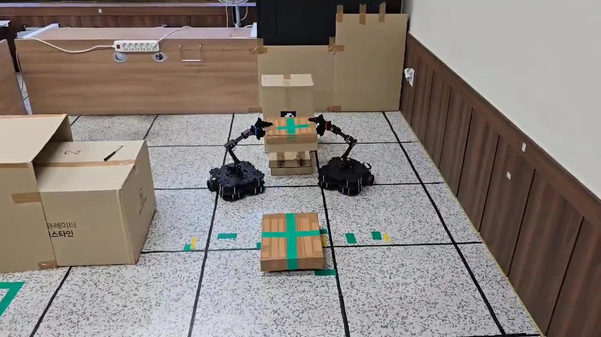
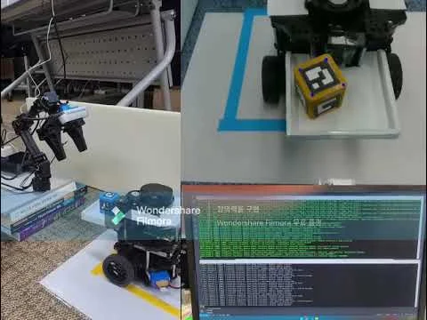
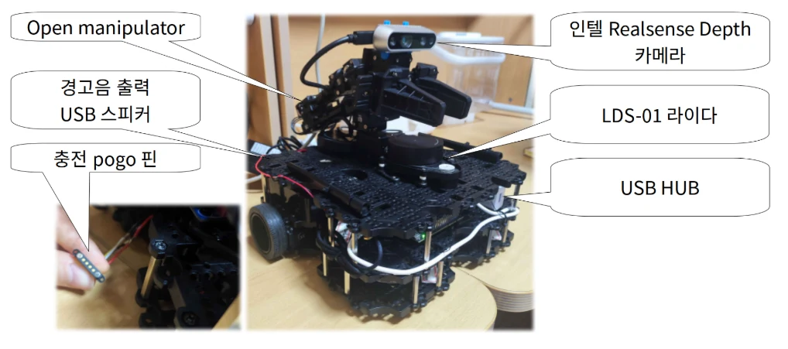
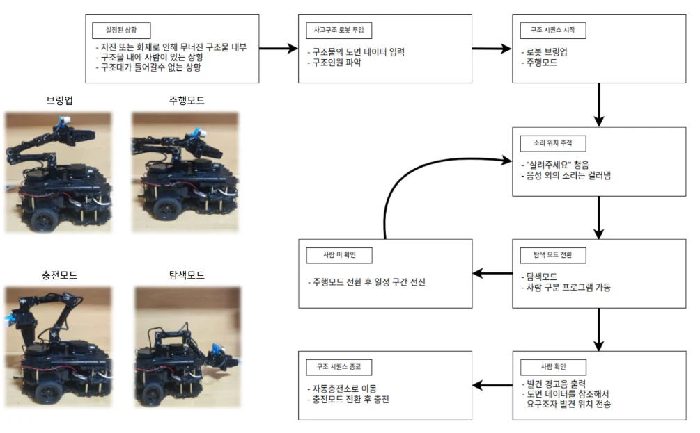
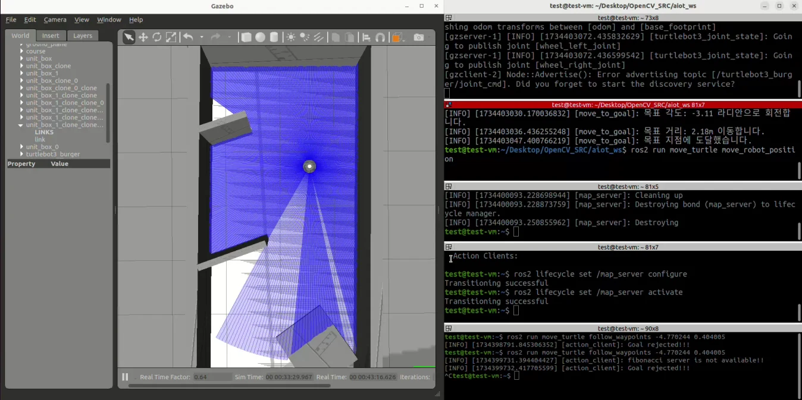
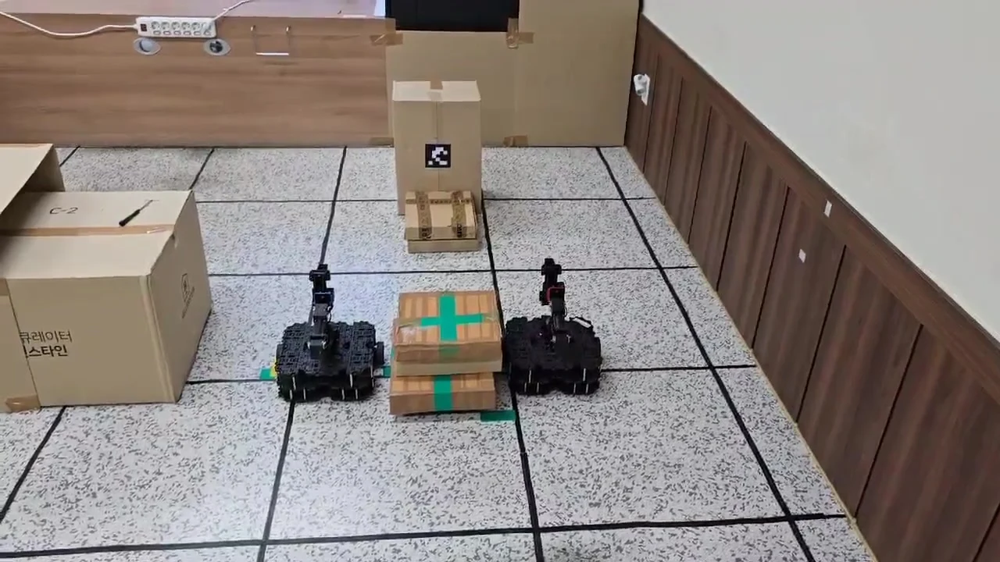

PROJECT MENTORING / DECEMBER 2024
로봇의 움직임을,
함께하는 작업으로
2024년 11월 25일~12월 19일 충남인력개발원. 물류 자동화, 사고 구조, 협동 운반으로 이어진 교육생 세 팀의 제작과 시연을 소개합니다.
옮기고, 찾고,
함께 들어 올리다
물체를 다음 장치에 넘기는 물류 공정, 소리를 향해 움직이는 탐지 로봇, 상자를 함께 드는 두 대의 로봇. 세 팀은 배운 센서와 제어 기술을 서로 다른 작업으로 연결했습니다. 완성된 장면과 개발 중 남은 과제를 함께 살펴봅니다.

크게 보기 ↗CoRoBo 팀의 원본 시연 영상에서 추출한 장면. 본문에는 교육생의 실제 장치와 발표자료를 사용했습니다.
- 프로젝트
- 물류 자동화 · 사고 구조
협동 작업 로봇, 세 팀 - 진행
- 11월 28일 계획 발표
12월 19일 최종 발표 - 참여 역할
- 최수길 · 프로젝트 지도·멘토링
기획·개발·시연 · 교육생 팀
TEAM 01 / AIoT ROBOT PROJECT
물건 하나의 이동을 여러 장치의 협업으로
1조 · 신남규 · 장현길 · 변새롬 · 이명철
1조는 컨베이어벨트, 로봇팔 두 대, TurtleBot3 한 대를 작은 물류 공정으로 연결했습니다. 벨트가 물체를 보내면 첫 번째 로봇팔이 이동로봇에 전달하고, 이동로봇이 목적지에 도착하면 다른 로봇팔이 물체를 내려놓는 흐름입니다. 각 장치의 기능을 만드는 데서 한 걸음 더 나아가, 다음 장치가 작업할 수 있는 순간을 맞추는 데 초점을 두었습니다.
적외선 센서는 벨트 위 물체의 도착을 감지하고 모터의 작동과 정지를 제어합니다. 로봇팔에는 MoveIt 2를 적용했고, RealSense D435 카메라와 마커 인식 화면을 통해 물체를 다루는 과정을 살펴봤습니다. 최종 발표자료에는 실습 장치의 전체 배치, 로봇팔 카메라 화면, 제작 과정과 시연 영상이 함께 남아 있습니다.
 크게 보기 ↗
크게 보기 ↗1조 최종 발표자료 8쪽. 물체를 전달하는 위치와 로봇의 이동 구역을 실물로 구성했습니다.

크게 보기 ↗1조 최종 발표자료 9쪽. 카메라가 보는 물체와 제어 화면을 함께 제시했습니다.
- 센서로 물체 도착 감지
- 벨트 정지·로봇팔 전달
- 이동로봇으로 운반
- 도착 지점에서 하역
팀은 로봇팔 제어, 벨트 자동화, 이동로봇 내비게이션, 카메라 처리와 코드 연동으로 역할을 나눴습니다. 프로젝트의 중심은 개별 장치의 성능 수치보다, 물체를 감지한 뒤 다음 동작으로 넘기는 연결에 있었습니다. 이 연결이 있어야 벨트 위의 물체가 로봇팔과 이동로봇을 거쳐 하나의 작업을 마칠 수 있습니다.
프로젝트에서 다룬 문제
카메라 인식, 벨트 정지, 로봇팔 동작, 이동로봇의 도착을 하나의 순서로 묶었습니다. 장치마다 다른 입력과 출력을 ROS2 기반의 작업 흐름으로 연결한 사례입니다.
결과와 다음 과제
실물 장치와 시연을 중심으로 자동화 흐름을 구성했습니다. 다품종 분류, 원격 모니터링, 공정 최적화는 팀이 제시한 후속 방향이며, 생산성 향상 수치나 산업 현장 적용 성과를 측정한 프로젝트는 아닙니다.
TEAM 02 / AIoT ROBOT PROJECT
소리를 향해 돌아보고, 카메라로 사람을 찾기
2조 · 김재환 · 장재희 · 하정민
2조는 사람이 쉽게 들어가기 어려운 사고 현장에서 요구조자의 위치를 찾는 상황을 주제로 삼았습니다. 네 개의 마이크로 소리의 방향을 얻고, 로봇을 그 방향으로 회전시킨 뒤 카메라로 사람과 사물을 구분하는 실습용 로봇입니다. 실제 구조 활동에 투입한 장비가 아니라, 탐지와 이동의 순서를 시험한 교육 프로젝트입니다.
마이크에서 얻은 방향은 ROS2 토픽으로 전달되고, 회전 명령으로 바뀝니다. 카메라 영상은 RealSense와 YOLOv5 기반 인식 노드를 거쳐 다음 행동을 결정하는 입력이 됩니다. 정면의 라이다 데이터로 가까운 장애물을 감지해 정지하도록 구성하면서, 소리·영상·거리 센서의 판단을 한 로봇 안에서 연결했습니다.

크게 보기 ↗2조 최종 발표자료 8쪽. 이동로봇 위에 탐지 장치와 로봇팔을 결합한 하드웨어 구성입니다.

크게 보기 ↗2조 최종 발표자료 6쪽. 탐지 결과와 이동·정지·복귀 동작의 관계를 정리했습니다.
- 소리 방향 탐지
- 로봇 회전과 주변 확인
- 사람·사물 구분
- 탐지 결과에 따른 동작
개발일지에는 로봇팔 명령을 단발성 토픽으로 전달할 때 일부 메시지가 건너뛰어져 서비스 호출 방식으로 바꾼 과정이 남아 있습니다. 센서 인식뿐 아니라 명령이 언제 처리되고 어떤 동작으로 이어지는지 확인하는 일이 중요한 통합 과제였습니다.
충전소 복귀는 별도의 Gazebo 환경에서 다뤘습니다. 팀은 실습 공간의 지도를 바탕으로 시뮬레이션을 만들고 충전 위치로 이동하는 순서를 시험했습니다. 최종 발표에서는 실기체의 자동 충전소 이동, 배터리 상태 노드, 중복 좌표계 문제 등을 남은 과제로 명시했습니다.

크게 보기 ↗2조 최종 발표자료 20쪽. 실제 기체의 자동 충전 완료와 구분되는 Gazebo 시험 화면입니다.
프로젝트에서 다룬 문제
마이크가 가리키는 방향과 로봇의 회전, 영상 인식과 다음 동작을 연결했습니다. 개발 중에는 로봇 구동 환경의 호환성과 좌표계, 여러 노드 사이의 명령 전달도 함께 다뤘습니다.
결과와 다음 과제
음성 방향 탐지와 사람 구분을 구현하고 복귀 시퀀스를 시뮬레이션으로 시험했습니다. 실기체의 안정적인 자율 복귀·충전과 중복 좌표계 해소는 후속 과제로 남았습니다.
TEAM 03 / AIoT ROBOT PROJECT
혼자 들기 어려운 물체를 두 로봇이 함께 옮기기
3조 CoRoBo · 송훈구 · 이주호 · 원용재 · 조은성
3조 CoRoBo는 한 대로 다루기 어려운 물체를 두 대가 함께 옮기는 협동 작업을 주제로 정했습니다. 이동로봇에 로봇팔을 결합하고, 두 로봇의 위치와 팔 동작을 맞추는 과제입니다. 제출한 시연 영상에는 두 로봇이 상자의 양쪽에서 팔을 움직여 함께 들어 올리는 장면이 담겨 있습니다.
팀은 동작을 하나씩 직접 지정하는 데서 더 나아가, 미션과 서비스를 등록해 여러 로봇에 전달하는 컨트롤 센터를 설계했습니다. 발표 시점 코드에는 데이터베이스에서 미션의 서비스 순서와 매개변수를 읽어 로봇팔 관절·그리퍼·이동 명령으로 연결하는 구조가 남아 있습니다. 두 로봇의 역할에 따라 일부 관절 명령의 방향을 바꾸는 처리도 포함되어 있습니다.

크게 보기 ↗3조 제출 발표 영상 1초 지점. 같은 물체를 다루기 위해 두 기체의 위치를 맞춘 장면입니다.
같은 영상 30초 지점. 팔의 동작을 맞춰 물체를 들어 올린 시연 장면입니다.
- 미션과 작업 순서 정의
- 로봇별 명령 전달
- 로봇팔·그리퍼 제어
- 두 기체의 동작 맞추기
협동 작업에서는 각 로봇이 잘 움직이는 것만으로 충분하지 않습니다. 같은 물체를 잡은 상태에서 한쪽의 움직임이 늦거나 방향이 어긋나면 작업 전체가 달라집니다. CoRoBo는 이 문제를 미션 관리, 로봇별 서비스, 하드웨어 조립과 제어로 나누어 접근했습니다.
프로젝트에서 다룬 문제
하나의 미션을 여러 동작으로 나누고 두 로봇에 맞는 명령을 전달하는 구조를 만들었습니다. 로봇팔을 이동기체에 장착하는 작업과 소프트웨어의 실행 순서를 함께 설계했습니다.
결과와 다음 과제
제출 영상에서는 두 로봇이 물체를 함께 들어 올리는 동작을 확인할 수 있습니다. 계획에 제시한 최적 경로 탐색과 다양한 물체의 자동 운반까지 완성한 것으로 확대하지 않고, 협동 동작과 제어 구조를 중심으로 소개합니다.
각자의 코드를 하나의 작업으로 연결하는 시간
프로젝트는 11월 25일에 시작했고, 28일 계획 발표를 거쳐 12월 19일 최종 발표로 마무리했습니다. 이 기간 최수길은 당시 바인드소프트 소속으로 프로젝트 지도와 멘토링에 참여했습니다. 주제 선정과 장치 제작, 소프트웨어 구현, 시연 결과는 교육생 팀의 작업입니다.
세 팀이 공통으로 다룬 것은 연결이었습니다. 센서가 보낸 값을 이동 명령으로 바꾸고, 한 장치의 동작을 다음 장치의 작업과 맞추며, 두 로봇이 같은 목표를 수행하게 만들었습니다. 최종 발표는 그 연결이 어디까지 작동했고 무엇을 더 다듬어야 하는지 설명하는 자리였습니다.